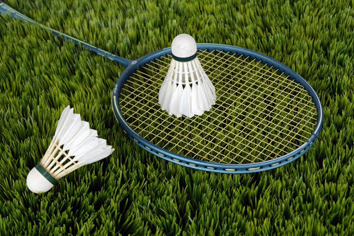
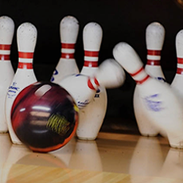
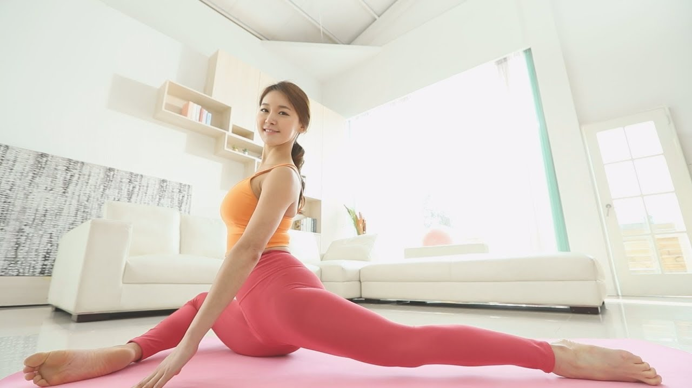

안녕하세요 저는 황현주 입니다.
제가 좋아하는 운동 3가지를 소개 드리겠습니다.
첫번째
배드민턴 입니다. 제가 배드민턴을 좋아하는 이유는 잘하기 때문입니다.
두번째
볼링 입니다. 볼링도 너무 재미있는데 요즘 코로나때문에 못치고 있어요 빨리 치고 싶습니다.
볼링을 잘 치지는 못하지만, 핀을 쓰러트리는 순간이 스트레스가 해소되어 행복합니다.
세번째
필라테스 입니다. 건강을 위한 운동으로 하고 있습니다.
지금까지 황현주가 좋아하는 운동에 대해서 소개했습니다.